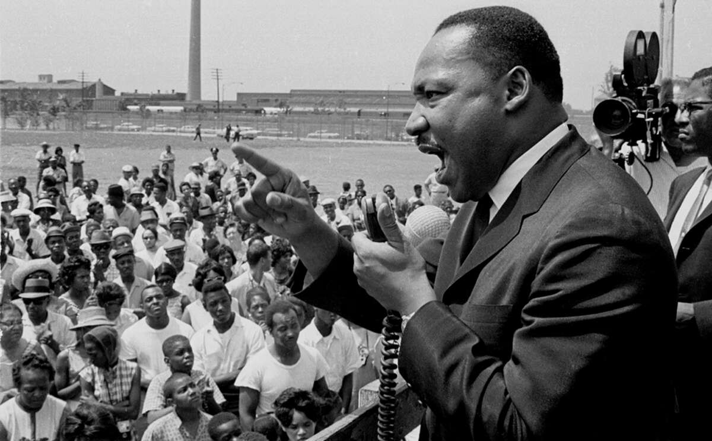
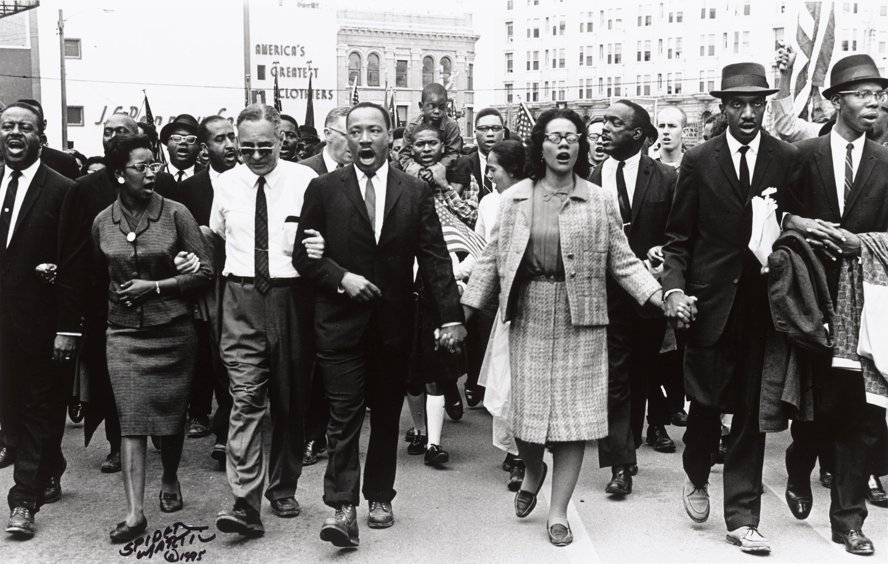

Home
Martin Luther King Jr.

Martin Luther King Jr. was an American Baptist minister, social activist, and one of the most influential and prominent leaders of the civil rights movement in the United States. Born on January 15, 1929, in Atlanta, Georgia, King was the second child and first son of Reverend Martin Luther King Sr. and Alberta Williams King.
King grew up in a family that valued education, religion, and social justice. His father was a prominent pastor at the Ebenezer Baptist Church in Atlanta, and his mother was a skilled organist and choir director. King attended Booker T. Washington High School, where he excelled in his studies and was known for his public speaking abilities.
After graduating from high school, King enrolled at Morehouse College in Atlanta. He was initially skeptical of religion and considered studying law or medicine, but after taking a class on the Bible, he became more interested in theology and decided to pursue a career in the ministry. King was an exceptional student, graduating with a degree in sociology in 1948. He then went on to study at Crozer Theological Seminary in Pennsylvania, where he earned a Bachelor of Divinity degree in 1951.
After completing his studies at Crozer, King began working as a pastor at the Dexter Avenue Baptist Church in Montgomery, Alabama. It was there that he became involved in the civil rights movement, organizing and leading the Montgomery bus boycott in 1955 after the arrest of Rosa Parks for refusing to give up her seat to a white person on a bus. The boycott lasted for 381 days and was a pivotal moment in the civil rights movement. It led to the desegregation of the Montgomery public transit system and helped to establish King as a national figure in the fight for racial equality.
King went on to become the leader of the Southern Christian Leadership Conference (SCLC), a civil rights organization that focused on nonviolent resistance and civil disobedience. He advocated for racial equality, desegregation, and voting rights for African Americans. King's leadership and vision were instrumental in the passage of the Civil Rights Act of 1964 and the Voting Rights Act of 1965, both of which were significant victories for the civil rights movement.
Despite his many accomplishments, King faced numerous challenges and obstacles throughout his life. He was arrested several times for his participation in civil rights protests and endured harassment, threats, and violence from white supremacists and segregationists. In 1963, he was imprisoned in Birmingham, Alabama, and wrote his famous "Letter from Birmingham Jail," in which he outlined his philosophy of nonviolent resistance and his belief in the power of love to overcome hatred.
In 1964, King was awarded the Nobel Peace Prize for his work in the civil rights movement. He used the prize money to support the movement and to fund the Poor People's Campaign, an initiative aimed at alleviating poverty and promoting economic justice.
King's life was cut short on April 4, 1968, when he was assassinated in Memphis, Tennessee. His death was a devastating blow to the civil rights movement and to the nation as a whole. However, King's legacy and impact continue to inspire people around the world. His speeches, such as "I Have a Dream," and his writings, including his book "Stride Toward Freedom," continue to be studied and celebrated for their eloquence, insight, and vision. King's commitment to nonviolence, his advocacy for justice, and his unwavering faith in the power of love and compassion continue to inspire generations of activists and social justice advocates.
